Download, launch APP, enter mesh page 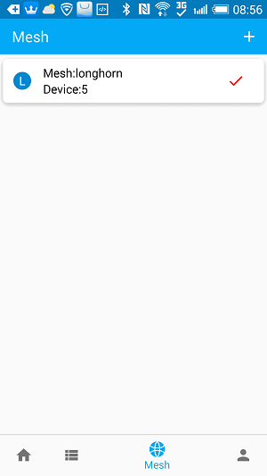 Click + to enter mesh setting page 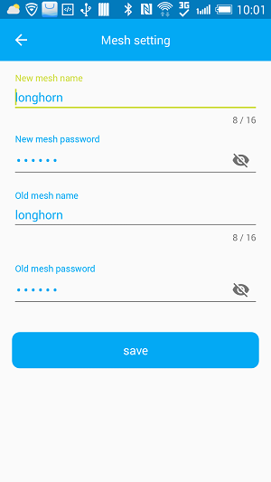 Need to enter the new mesh network name, password, click Save to return to the application home page.(So the equipment factory mesh network name is longhorn, the password is 123456, you need to set a new mesh network name and password)
Use the Bluetooth search device that comes with the phone. The device name with the most name is the current network name.
Enter the APP default main navigation display device home page, the device home page is used to record the current network device and operate. 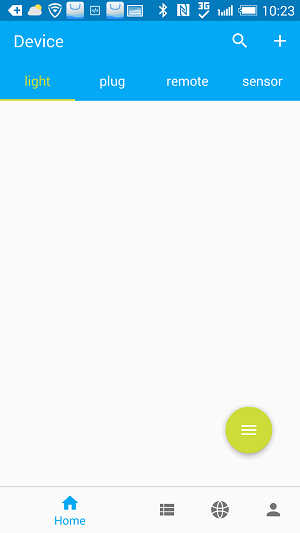 Click + to enter add device page 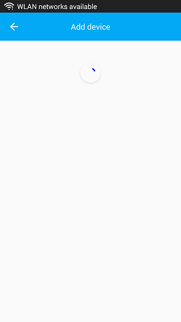
The device operation homepage includes a global search, full-on, full-close, and device click or long press.
Click on the home page search icon, enter the device name can directly enter the device operation secondary page 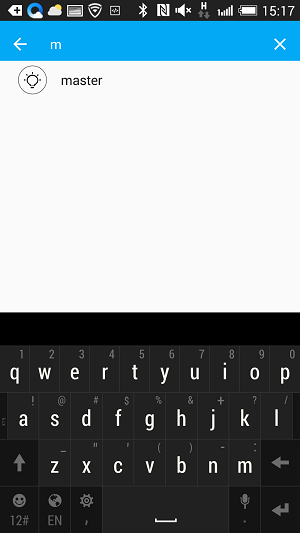
Click on the home page fab, the all device can onOff 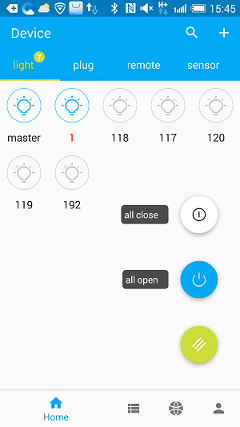
device click or long press to enter device setting page 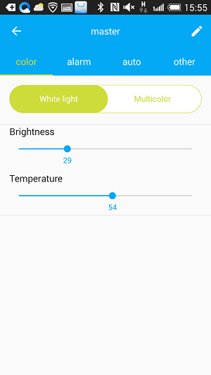 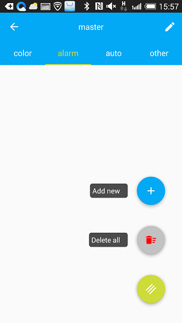 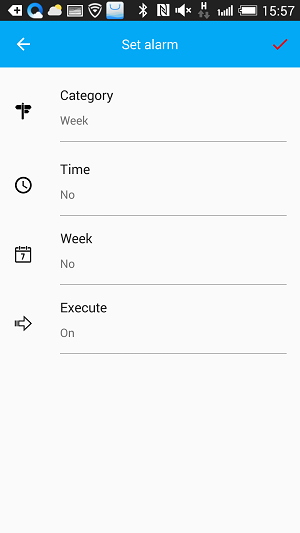 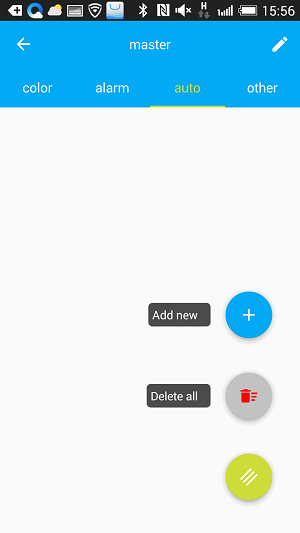 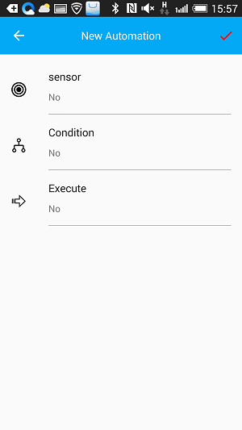 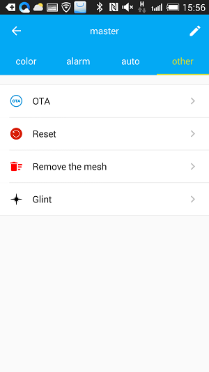